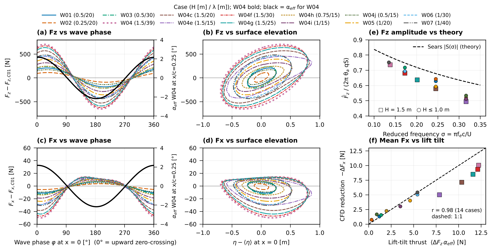
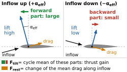

Result: in all 14 regular wave cases the rigid foil at 2 m depth has a lower mean horizontal force Fx than in calm water: ΔFx = −0.77 to −10.1 N (calm: Fx = 27.0 N, Fz = 1217 N on the 0.02 m span; CD = 0.00700, CL = 0.316), i.e. ΔCD = −0.0002 to −0.0026. This is negative wave added resistance (NWAR). It comes from the forward tilt of the oscillating lift: the wave turns the inflow up and down by ±0.4–2.3°, lift follows the angle, and its forward component is larger when lift is high than its backward component when lift is low.
| Foil | NACA 66-012 mod, a = 0.8 (mod.) mean line, camber f/c = 0.025; chord c = 1.19 m; quasi-2D span 0.02 m (symmetry planes); incidence 0°, fixed |
| Flow | U = 18 m/s, fresh water ρ = 1000 kg/m³, μ = 1.0·10⁻³ Pa·s, Re = 2.14·10⁷; air ρ = 1.2 kg/m³; qS = ½ρU²·c·0.02 m = 3856 N; Cx, Cz, CD, CL = force/qS |
| Submergence | h = 2.0 m from still-water level to the chord line (h/c = 1.68); water depth 24 m |
| Waves | Head waves, 5th-order Stokes, height H = 0.25–1.5 m, length λ = 15–40 m (H/λ ≤ 0.10); encounter frequency fe = 0.65–1.52 Hz; reduced frequency σ = πfec/U = 0.13–0.32 (π × chord / distance the water travels in one wave encounter) |
| Physics | URANS, SST k–ω, fully turbulent (no transition model), all-y+ wall treatment; VOF free surface. Domain x = −70…90 m, waves imposed in a 40 m inlet zone and absorbed in a 40 m outlet zone (W01–W03: shorter domain, −35…45 m) |
| Time | Δt = 0.4 ms, 2nd order, 10 inner iterations; 1 640–3 860 steps per encounter period |
| Averaging | 5 wave cycles, cycle 1 discarded, mean of 2–5; accepted if cycles repeat: mean within 1%, amplitude 8%, shape 5% (RMS) |
| Calm mesh | Cells | Δt [ms] | Cx | vs M12 | Cz | vs M12 |
|---|---|---|---|---|---|---|
| M10 | 317 277 | 0.4 | 0.007147 | −2.1% | 0.3130 | +0.7% |
| M11 | 595 285 | 0.2 | 0.007248 | −0.7% | 0.3130 | +0.7% |
| M12 (finest) | 1 154 199 | 0.1 | 0.007298 | 0 | 0.3108 | 0 |
| M13 (used) | 309 441 | 0.4 | 0.007002 | −4.1% | 0.3157 | +1.6% |

| Case | Wave height H [m] | Wave length λ [m] | Inflow-angle amplitude θa [°] | Reduced frequency σ [–] | Lift swing (amplitude) F̂z [N] | Mean lift change ΔFz [N] | Mean Fx (calm: 27.0) Fx [N] | Mean Fx change ΔFx [N] | Lift-tilt thrust gain Ftilt [N] | Change of drag along inflow Frest [N] |
|---|---|---|---|---|---|---|---|---|---|---|
| W01 | 0.5 | 20 | 0.75 | 0.25 | 198 | +9.9 | 25.7 | −1.31 | −1.17 | −0.14 |
| W02 | 0.25 | 20 | 0.37 | 0.25 | 101 | +10.5 | 26.2 | −0.77 | −0.29 | −0.48 |
| W03 | 0.5 | 30 | 0.75 | 0.17 | 228 | +10.3 | 25.4 | −1.56 | −1.36 | −0.20 |
| W04 | 1.5 | 39 | 2.17 | 0.14 | 678 | +15.9 | 16.9 | −10.06 | −12.21 | +2.15 |
| W04c | 1.5 | 20 | 2.24 | 0.25 | 549 | +15.6 | 19.8 | −7.17 | −10.33 | +3.16 |
| W04e | 1.5 | 15 | 2.09 | 0.32 | 438 | +12.4 | 22.0 | −5.03 | −7.87 | +2.84 |
| W04f | 1.5 | 30 | 2.25 | 0.17 | 648 | +16.1 | 17.6 | −9.36 | −12.11 | +2.74 |
| W04g | 1.5 | 25 | 2.27 | 0.20 | 612 | +16.4 | 18.5 | −8.54 | −11.58 | +3.04 |
| W04h | 0.75 | 15 | 1.05 | 0.32 | 230 | +15.6 | 24.7 | −2.25 | −1.97 | −0.29 |
| W04i | 1 | 15 | 1.40 | 0.32 | 302 | +15.1 | 24.0 | −3.03 | −3.50 | +0.46 |
| W04j | 0.5 | 15 | 0.70 | 0.32 | 158 | +15.9 | 25.3 | −1.67 | −0.88 | −0.79 |
| W05 | 1 | 20 | 1.49 | 0.25 | 374 | +17.2 | 23.0 | −4.03 | −4.57 | +0.54 |
| W06 | 1 | 30 | 1.50 | 0.17 | 440 | +18.3 | 21.9 | −5.06 | −5.40 | +0.34 |
| W07 | 1 | 40 | 1.44 | 0.13 | 459 | +19.3 | 21.6 | −5.42 | −5.41 | −0.01 |
Reading the table: wave (H, λ, θa, σ) → lift response (F̂z, ΔFz) → mean Fx and its change, ΔFx = Ftilt + Frest. Ftilt is a thrust (negative) in all 14 cases and tracks ΔFx (r = 0.98).

ΔFz, ΔFx = mean on the wave minus calm water (1217 N, 27.0 N). Fx > 0 is resistance, < 0 thrust.
Ftilt (lift-tilt thrust gain): lift is perpendicular to the inflow, so it leans with the inflow and gets a horizontal part (sketch; angles exaggerated, real ±0.4–2.3°). Ftilt = cycle mean of that part = −mean(ΔFz·αeff).
Frest = ΔFx − Ftilt = change of mean drag along inflow. W04: −10.06 = −12.21 + 2.15 N.
Frest for H ≤ 1.0 m (≤ 0.8 N) and ΔFx of W01–W03 (≤ 1.6 N) are of the order of the calm mesh difference (1.1 N); the sign of Frest is resolved only for H = 1.5 m. Free-surface Courant number > 1: measured wave height up to 4% low, i.e. Ftilt up to ≈8% low (∝ H²). Cycle-to-cycle 95% range of ΔFx ≤ ±0.2 N.